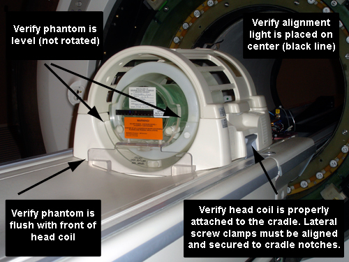
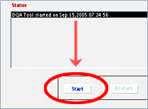
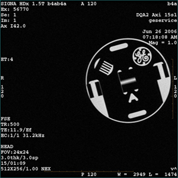

Operating Documentation
Direction 5500113, Rev# 3
Discovery MR450 1.5T Service Methods
Module Version 14.0, Version Date 8/16/10
Operating Documentation |
| Required Persons | Preliminary Reqs | Procedure | Finalization |
|---|---|---|---|
| 1 | Not Applicable | 30 minutes (varies) | 10 minutes |
The DQA II tool will determine proper gradient polarity (positive to positive and negative to negative) and proper gradient wiring (X amp drives X coil, Y amp drives Y coil, Z amp drives Z coil) by scanning a series of Axial and Coronal images of the DQA III Phantom.
The tool will also verify that the proper phantom is being used. After proper Gradient orientation is confirmed, the tool will adjust for Z-ISO-Center and gradient calibration. If Z-ISO adjustments or gradient calibration adjustments are needed, the DQA-II tool will perform the appropriate iterations to complete. Therefore, the DQA II tool's completion time varies.
| Item | Qty | Effectivity | Part# | Manufacturer | |
|---|---|---|---|---|---|
| DQA-III Phantom | 1 | - | 2321556 | - | |
| Condition | Reference | Effectivity |
|---|---|---|
Laser Light Alignment completed. | - | - |
Shim per Installation and Calibration Wizard. | - | - |
| ||||
| Verify that the Laser Light Alignment has been completed. Pay close attention to position the alignment light on the phantom as this procedure requires an accurate landmark. | ||||
| ||||
| If you encounter problems performing this calibration, see the Troubleshooting section. | ||||
Insert the DQA-III phantom into the head coil, verify its orientation and levelness.
Table 1: Phantom Type
| Phantom | Part Number |
| DQA-III Phantom | 2321556 |
| NOTE: | The correct phantom type, position, and landmark are critical
to successful operation of the DQA II tool. It is very important that you securely clamp the head coil to the table, otherwise there is a chance the coil can move out of position during table advance to isocenter. You should also ensure that landmarking is positioned precisely on the black circumferential line around the phantom's waist. |
| NOTE: | Touch-and-go landmarking strip should NEVER be used by Field Engineers when manually landmarking as part of a calibration tool procedure. |
Landmark on the center line of the DQA III phantom. Laser must be in middle of black circumferential marker line. (See Illustration 1.)
Illustration 1: Phantom Orientation, Split-Top Head Coil

Start the DQA II tool.
Make sure the Service key is installed. On the Common Service Desktop, select [Calibration Wizard] from the Calibration menu and select [Click here to start this tool].
After the Calibration Wizard starts, select [DQA] from the menu. Review and approve the pre & post-dependencies, and then select [Click here to start this tool] to start the procedure.
For non-proprietary mode, on the Common Service Desktop, select [Calibration Wizard] from the Calibration menu and select [Click here to start this tool].
In the new window that appears, click the [Start ] button. (See Illustration 2.)
Illustration 2: DQA II at Startup

| NOTE: | All phantom images acquired during the DQA II tool can
be viewed in the browser. You can view these images if problems occur. To stop the DQA II tool without restarting it, click [Abort] at any point. |
As the DQA II tool progresses, the status appears in the Progress area. If problems are encountered, they will appear in the Actions Required section.
Illustration 3: DQA Screen with Actions Required

| NOTE: | After resolving the issues in the Actions Required section, to restart the DQA II tool, click the [Restart] button. |
After the tool successfully completes its tasks, click the [Exit] button.
Illustration 4: Successful Test

| NOTE: | To restart the DQA II tool at any point, click Restart. To stop the DQA II tool without restarting it, click Abort. |
Diagnose type of error, and then use Illustration 5 and Table 2 to determine recommended solutions if there are failures when using the DQA II tool.
| NOTE: | Take notice of the structure in Table 2. The first row contains standard language for Step 1 that you use for all recommended solutions. Thereafter, all subsequent rows containing recommended solutions refer you to the top of the table to perform specific tasks before continuing to the next step. |
Illustration 5: Gradient Direction Conventions to be used with DQA II Error Messages

Table 2: Potential DQA II Tool Test Errors
| Symptom in DQA II Tool “Actions Required” window | Recommendations |
|---|---|
| NOTE: Use Step 1 in the right column as the first step for all Recommendations in this table. |
|
| “One or more gradients appear not to be functioning at all.” | Verify System can properly scan head image. Refer to Reviewing DQA-II Images for Verification of Proper Head Scan for proper images. |
| "The Z gradient coil appears to be driven by the wrong gradient input." |
|
| "The phantom used appears to be wrong and/or severely mis-positioned." |
|
| "The phantom is offset more than +/-36 mm along Z." |
|
| "X and Y gradient coil inputs appear to be swapped." |
|
| "X and Y gradient polarities appear to be inverted." |
|
| "X gradient polarity appears to be inverted." |
|
| "Y gradient polarity appears to be inverted." |
|
| "The phantom appears to be rotated 16 degrees about the physical Z axis." |
|
| "The phantom center appears to be offset 20 mm along physical X." |
|
| "The phantom center appears to be offset 20 mm along physical Y." |
|
| "Z gradient polarity appears to be inverted." |
|
| "The phantom appears to be rotated 16 degrees about the physical Y axis." |
|
Review images to verify proper head scan.
| NOTE: | Before performing the steps in this section, check the
following:
|
Open the browser.
Review the last exam.
The DQA II tool scans both Axial and Coronal images. Each scan has its own separate exam. The images to target for review (if needed) are those from the most recent DQA II related exam.
Illustration 6: Example Axial Image At IsoCenter, Post Calibration

Illustration 7: Example Coronal Image

| NOTE: | These are sample images. |
This is an example of phantom rotated counterclockwise, and is grossly offset in the +X position. (See Illustration 8.)
Illustration 8: Example Axial Image With Positive Z Axis Rotation and X Axis Offset

Remove phantom and head coils.
Remove the service filler panels from each of the two cradle top panels.